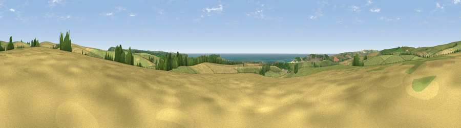

Viewpoint near Denton
#4727 in England · top 17% of its area beats it · near DentonThe view, rendered

A 360° render of this exact spot computed from the terrain model, tree cover and land cover — summer colours, afternoon light, calibrated against photographs of famous viewpoints. Real trees, hedges and buildings will differ in detail.
The panorama
Grey silhouette: terrain skyline in each direction (720 bearings, Earth curvature and refraction included). Dashed green: skyline with trees (+15 m) and buildings (+8 m) as obstacles. Blue strip: how far the ground is visible on each bearing.
Where the view opens
Wedge length = distance to the farthest visible ground on that bearing (vegetation-aware). Rings at 10, 25 and 50 km.
What fills the view
50% grassland · 25% cropland · 14% water · 9% woodland · 2% built-up
Angular shares of the visible panorama (visual magnitude), not map area. Landscape diversity 0.55 (0–1 Shannon).
Key numbers
More beautiful places nearby
The staircase of upgrades: each row has a higher view potential than everything closer. Driving times are estimates from straight-line distance, calibrated against real road routing — check an actual route before setting out.
| Place | Direction | Drive | Score |
|---|---|---|---|
| Viewpoint near Alciston | NE · 2 km | ~5 min | 83.4 |
| Viewpoint near Alciston | NE · 2 km | ~5 min | 84.8 |
| Viewpoint near Alciston | NNE · 2 km | ~6 min | 85.8 |
| Viewpoint near Alciston | N · 3 km | ~6 min | 86.8 |
| Firle Beacon | N · 3 km | ~7 min | 88.9 |
| Viewpoint near Niton | WSW · 102 km | ~127 min | 89.2 |
| Viewpoint near West Bexington | W · 194 km | ~213 min | 89.5 |
| The Knoll | W · 195 km | ~214 min | 91.0 |
50.80909, 0.10686 · source: screening · position refined by local search. Computed location — check access rights before visiting.